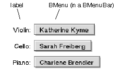

| The Interface Kit Table of Contents | The Interface Kit Index |
Derived from: BView
Declared in: be/interface/MenuField.h
Library: libbe.so
A BMenuField object displays a labeled pop-up menu. It's a simple object that employs a BMenuBar object to control a BMenu. All it adds to what a BMenuBar can do on its own is a label and a more control-like user interface that includes keyboard navigation.

The functions defined in this class resemble those of a BControl (SetLabel(), IsEnabled()), especially a BTextControl (SetDivider(), Alignment()). However, unlike a real BControl object, a BMenuField doesn't maintain a current value and it can't be invoked to send a message. All the control work is done by items in the BMenu.
|
Initializes the BMenuField object with the specified frame rectangle, name, resizingMode, and flags. These arguments are the same as for any BView object and are passed unchanged to the BView constructor. When the object is attached to a window, the height of its frame rectangle will be adjusted to fit the height of the text it displays, which depends on the user's preferred font for menus.
By default, the frame rectangle is divided horizontally in half, with the label displayed on the left and the menu on the right. This division can be changed with the SetDivider() function. The menu is assigned to a BMenuBar object and will pop up under the user's control. For most uses, the menu should be a BPopUpMenu object.
The second form of the constructor accepts an added argument, fixedSize. If this is true, the BMenuField won't adjust its size based on the width of the items in the menu.
|
Frees the label, the BMenuBar object, and other memory allocated by the BMenuField.
|
Returns a new BMenuField object, allocated by new and created with the version of the constructor that takes a BMessage archive. However, if the archive message doesn't contain data for a BMenuField object, this function returns NULL.
See also: BArchivable::Instantiate(), instantiate_object(), Archive()
|
Calls the inherited version of Archive(), which will, in the normal course of things, archive the child BMenuBar and the BMenu it displays, provided the deep flag is true. This function then adds the label, divider, and current state of the BMenuField to the BMessage archive.
See also: BArchivable::Archive(), Instantiate() static function
|
These functions override their BView counterparts to make the BMenuField's background color match the color of its parent view and to adjust the height of the view to the height of the BMenuBar child it contains. The height of the child depends on the size of the user's preferred font for menus.
See also: BView::AttachedToWindow()
|
Overrides the BView version of this function to draw the view's border and label. The way the menu field is drawn depends on whether it's enabled or disabled and whether or not it's the current focus for keyboard actions.
See also: BView::Draw()
|
Augments the BView version of KeyDown() to permit keyboard navigation to and from the view and to allow users to open the menu by pressing the space bar.
See also: BView::KeyDown()
|
Augments the BView version of MakeFocus() to enable keyboard navigation. This function calls Draw() when the BMenuField becomes the focus view and when it loses that status.
See also: BView::MakeFocus()
|
Menu() returns the BMenu object that pops up when the user operates the BMenuField; MenuBar() returns the BMenuBar object that contains the menu. The BMenuBar is created by the BMenuField; the menu is assigned to it during construction. MenuItem() returns the first BMenuItem assigned to the BMenuBar object containing the menu.
See also: the BMenuField constructor
|
Overrides the BView version of MouseDown() to enable users to pop up the menu using the mouse, even if the cursor isn't directly over the menu portion of the bounds rectangle.
See also: BView::MouseDown()
|
These functions set and return the alignment of the label in its portion of the frame rectangle.
The default is B_ALIGN_LEFT.
|
These functions set and return the x coordinate value that divides the bounds rectangle between the label's portion on the left and the portion that holds the menu on the right. The coordinate is expressed in the BMenuField's coordinate system.
The default divider splits the bounds rectangle in two equal sections. By resetting it, you can provide more or less room for the label or the menu.
|
SetEnabled() enables the BMenuField if the enabled flag is true, and disables it if the flag is false. IsEnabled() returns whether or not the object is currently enabled. When disabled, the BMenuField doesn't respond to mouse and keyboard manipulations.
If the enabled flag changes the current state of the object, SetEnabled() causes the view to be redrawn, so that its new state can be displayed to the user.
|
SetLabel() frees the current label and, if the argument it's passed is not NULL, replaces it with a copy of string. Label() returns the current label. The string it returns belongs to the BMenuField object.
See also: the BMenuField constructor
|
Makes sure that the BMenuField is redrawn when the window is activated and deactivated, provided that it's the current focus view.
See also: BView::WindowActivated()
The Archive() function adds the following fields to its BMessage argument:
| Field | Type code | Meaning |
|---|---|---|
| "_label" | B_STRING_TYPE | BMenuField label. |
| "_disable" | B_BOOL_TYPE | Exists and true only if menu is disabled. |
| "_align" | B_INT32_TYPE | Alignment of label in the frame rectangle. |
| "_divide" | B_FLOAT_TYPE | The x-coordinate dividing the bounds rectangle between the label and the menu. |
The following views are added to the "_views" field (deep copy only):
| Name | Level | Meaning |
|---|---|---|
| "_mc_mb_" | 0 | Private menu bar. |
| The Interface Kit Table of Contents | The Interface Kit Index |
Copyright © 2000 Be, Inc. All rights reserved..